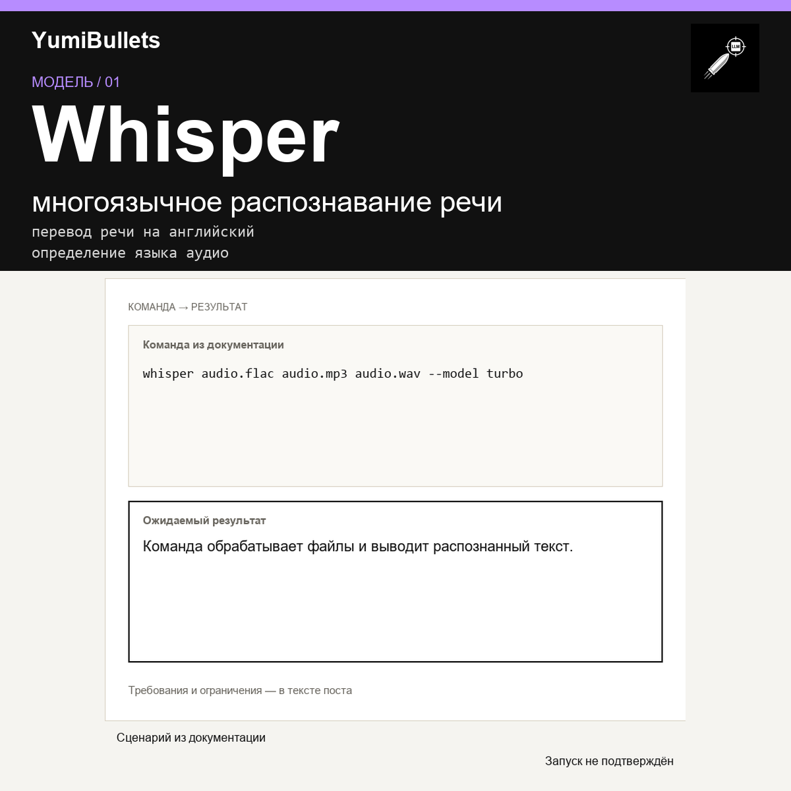

Whisper: локальное распознавание речи на десятках языков
Распознать речь на японском, арабском или русском можно одной командой — без API-ключей и лимитов сторонних сервисов. Whisper работает локально и выдаёт текстовую расшифровку или…

Распознать речь на японском, арабском или русском можно одной командой — без API-ключей и лимитов сторонних сервисов. Whisper работает локально и выдаёт текстовую расшифровку или…